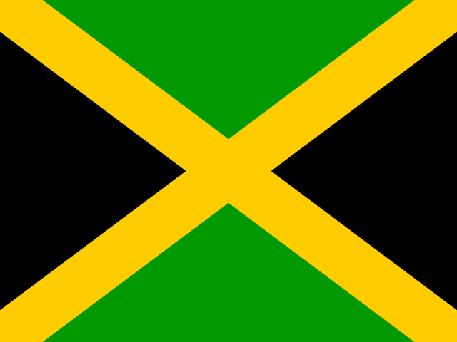

Gene Stump
Age at death
about 90
2014
NBA seasons
3
1947-48 to 1949-50
Games
148
regular season
Per game
5.3
5.3 points
Life
- Born
- Nov. 13, 1923
- Died
- 2014
- Age at death
- about 90
- Height
- 6'2" (height and lifespan)
Teams
regular-season games| Boston Celtics | 1947-48 to 1948-49 | 2 | 99 |
| Minneapolis Lakers | 1949-50 | 1 | 23 |
| Waterloo Hawks | 1949-50 | 1 | 26 |
Age in context
- No. 102 longest-lived NBA player ever (records).
- No. 10 longest-lived Celtic ever (oldest Celtics ever).
- No. 10 longest-lived Laker ever (oldest Lakers ever).
- No. 4 longest-lived Waterloo Hawks player ever (oldest Waterloo Hawks players ever).
- He lived longer than 87.1% of the NBA players born in the 1920s who have died (99.1% of that generation has died, so the comparison is essentially complete).
Born the same year (1923)
Also died at age 90
25 players died at 90; the most accomplished are shown.
Also born on November 13

Rumeal Robinsonb. 1966 · age 60Similar height
Of 171 NBA players within an inch of his height (6'2") born 1918–1928 whose outcome at 90 is known, 17.5% reached 90. How height and lifespan line up.